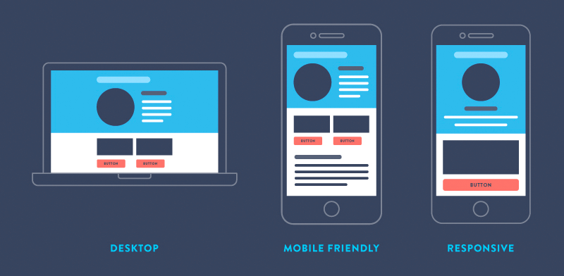

Mobile and Desktop Design

In this article “Desktop vs. mobile app design: how to optimize your user experience”, I learned that there are many differences between designing desktop and mobile app, and mobile app or website is not just a smaller version of a desktop app or website.
For instance, desktop app and web can consists of many columns, which mean desktop app is easier to use if the user need to do some complicated tasks. In contrast, mobile web is simpler because of its limited screen. when designing web or app for mobile devices, designer can think about how to use the “swap” function to make the web experience better. It is important that making both mobile and desktop web/app good because most people use both of devices.
In the article “Desktop vs. Mobile: Three Key Website Design Differences”, the author mentions that menu is one of main differences between mobile and desktop. Desktop is able to show many content at once because the format of desktop is large. But the mobile web need to be much simpler, and it need to show the most important information only.
Another thing that need to be aware is that to avoid too much typing when design mobile web because the typing experience on the mobile device is not as convenient as computer. Therefore, designer can provide something like selecting instead of typing everything.
I use web all the time for study or entertain. I am more likely to reach my phone when I am not at home because it is convenient to use the phone to find info that I need. I use my Ipad when I am home, and I use my computer for watching video or doing design task.
https://www.distilled.net/training/mobile-seo-guide/